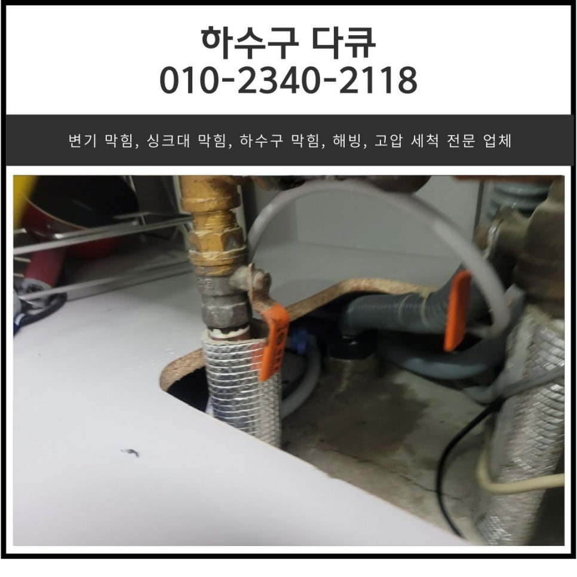
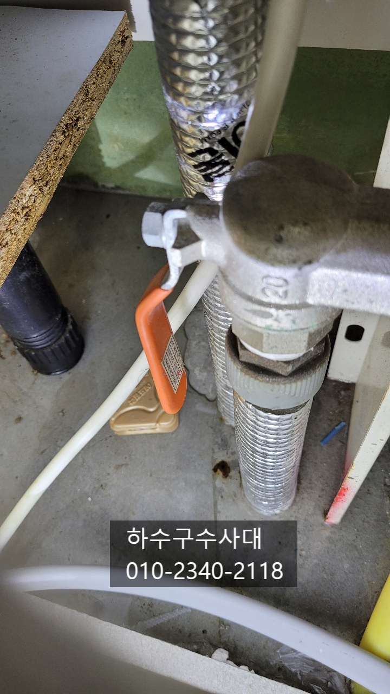
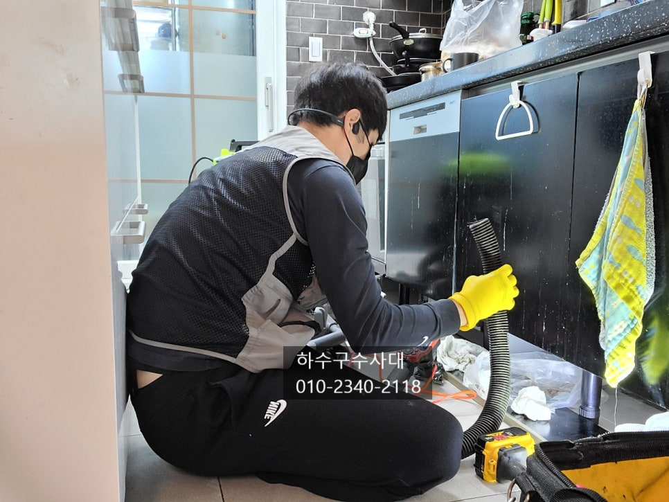
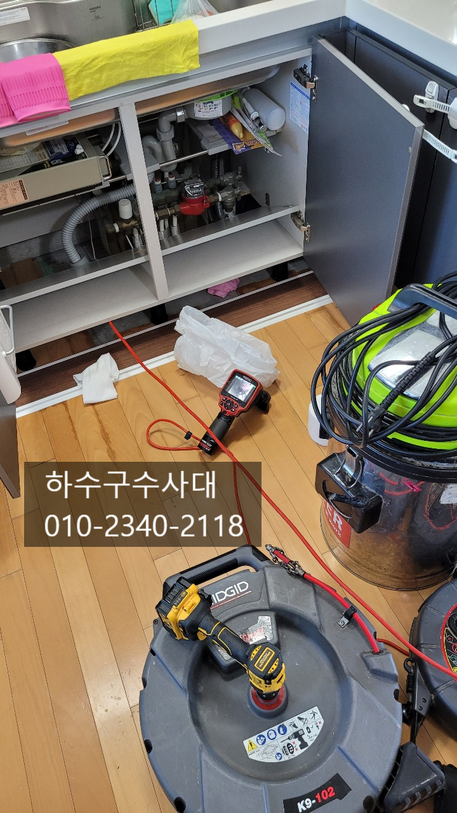
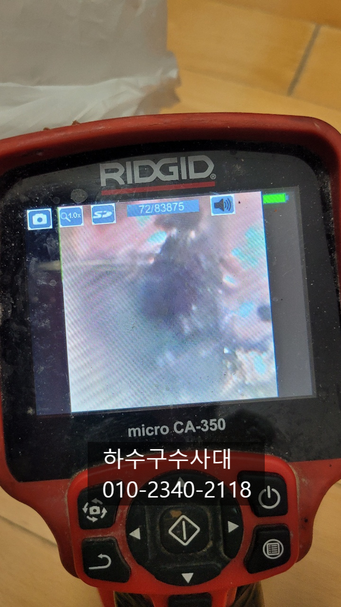
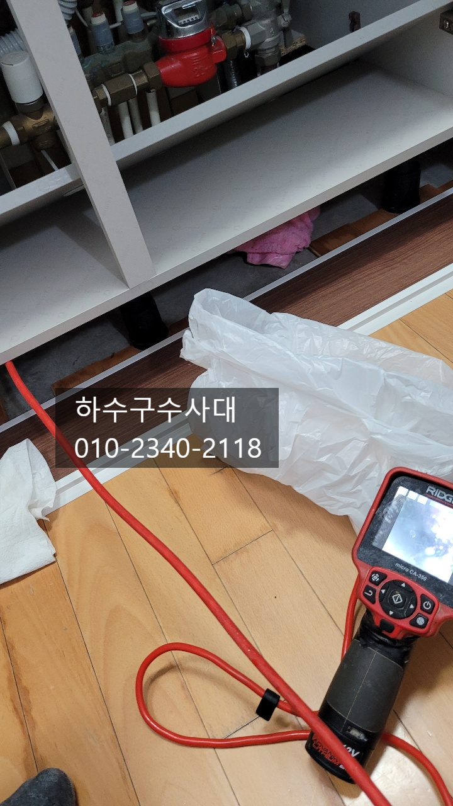
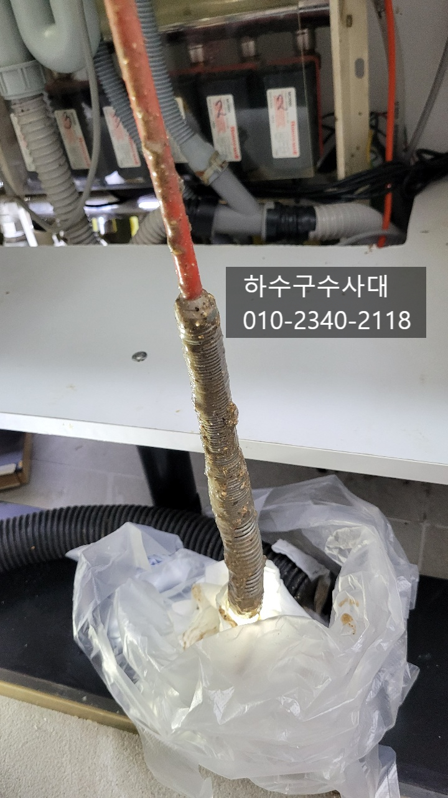

🏠 벌음동 싱크대 막힘 오산 양산동 하수구 역류 뚫어주는 설비 업체
오산 싱크대막힘 전문 시공 후기

📋 작업 개요
- 위치: 오산
- 서비스 유형: 싱크대막힘, 하수구막힘, 배관막힘, 누수수리, 역류해결, 뚫는업체
- 작업 일시: 2025. 2. 1. 18:15
- 업체명: 하수구수사대 (010-5615-2118)
🔍 문제 상황
오산싱크대막힘 원인파악과 완벽해결
안녕하세요!
"하수구수사대"인사드립니다.
싱크대물이 시원하게 내려가지 않나요?
설거지를 하면서 싱크대밑에서
물이 새어 나온적이 있나요?
싱크대 주변 마루바닥이 검게
변색이 되지는 않았나요?
#싱크대막힘 증상은 다양하게 나타나는데요
간혹 밑에집 천장에 누수가 생겨서 원인을
찾다가 싱크대하수구가 막혀 있는것을
발견하기도 합니다.
오늘은 싱크대하수가막혀 밑에집에
누수가 된 현장에 대해서 포스팅 할테니
끝까지 읽어보시고 도움이 되시길 바랍니다
고객님집에 도착하여보니 싱크대밑 보일러
분배기주변으로 물이 흥건히 젖어 있는것을
확인 할수 있습니다.
밑에집 천장에 누수가 생겨 알게 되셨다는데요
일시적인 역류로 누수가 되지는 않는데
지속적으로 물이 흘러나오니 점점 새어

🔎 원인 분석
💡 전문가 진단: 하수구수사대010-2340-2118
밑에집까지 내려간 상황입니다.
물이 하수구에서 계속 새어나오고 있었는데요
물을 쓰지도 않는데 계속 새어나오는 이유는
바로 정수기호스 때문입니다. 정수기호스에서도
정수기사용시 물이 주기적으로 나오는데요
하수구가 완전히 막혀 적은양의 물조차
소화를 못하고 역류하고 있었어요.
하수구수사대
010-2340-2118
보통은 막히게되면 해볼수 있는것이
몇가지 있는데요 펑크린이나 뚜러펑 같은
세정제를 넣게 되는데요 단순하게 막히게되면
세정제가 막고있는 이물질에게 영향을 주어
뚫리는 효과를 보기도 합니다. 또는 철물점에서
파는 가정용스프링으로 이물질을 밀어내거 뽑아내어
뚫리기도 합니다.
하지만 싱크대막힘의 주요원인은 기름슬러지입니다.
기름슬러지는 배관 옆쪽부터 위쪽에 붙게되면
점점 시간이 지날수록 딱딱해지는데요
딱딱해진 기름덩어리는 자연적으로 없어지지
않는게 팩트입니다.

🔧 작업 과정
내시경카메라를 배관상태를 보니 기름이 너무
많아 내시경도 잘 들어가지 않았는데요
기름슬러지가 배관에 쌓이게 되면
심한 악취를 동반하게 됩니다.
막힘증상과 악취를 동시에 해결하는
방법은 배관속 이물질을 모두 제거하는게
가장 좋습니다.
아무래도 싱크대배관은 관리없이 오래 사용하면
기름기가 쌓이게 되고 결국 막힘증상이
나타나게 되는데요 보통 정상정인 배관은
10년이상을 써도 막히는 증상이 없지만
배관에 꺽여나가거나 길거나 구배가 좋지않으면
막힘증상이 빨리 나타나게 되는데
요즘 지어지는 아파트들이 배관구조를
여러번 꺽여놔 물 흐름이 원활하지 않아
2~3년만에도 막히는 현상이 나타나고 있습니다.
음식물처리기도 빨리 막히는 원인이 되기도
하는데요 음식물을 갈아낼때 물을 많이
흘려보내야하는데 적은양으로 음식물을 갈다보면
배관에 갈아버린 음식물이 쌓여 막히기도 한답니다.
기름이 배관에 붙게되면 쉽게 떨어지지
않기때문에 장비를 넣어 기름을 제거해주는게
좋습니다. 플렉스샤프트가 고속회전을 하면서
기름덩어리를 모두 갈아내는 작업이 반복적으로
이어집니다.
내시경카메라로 보면서 작업을 하기때문에
배관에 손상을 주지않고 기름만 제거해주는데요
간혹 싱크대호스같은 이물질이 막고있기 때문에
신중하게 작업을 해줍니다^^
물을 흘려보내면서 작업을 해주는데요
붙어있던 기름덩어리를 갈면서 밖으로 배출해주기
때문이에요. 내시경카메라를 보면서
배관에 붙어있는 기름덩어리를 모두 제거해 줍니다.
배관에 붙어있는 이물질을 모두 제거되고


✅ 작업 완료
물이 잘 흘러나가는 것을 확인할수 있습니다.
항상 마무리는 물을 받아서 한번에
내려주는데요 혹시나 모를 역류현상과
싱크대호스 이음부분에서 조금씩 새는 경우도
있기때문에 꼼꼼하게 살펴보는것이 중요해요.
싱크대하수구가 막혀서 고민중이시라면
언제든지 연락주세요
원인부터 해결 그리고 AS까지 완벽하게
작업해드립니다^^




⚠️ 베란다 누수 및 방수 관리 방법
- ✅ 비가 많이 올 때 창틀 주변이나 아래층 천장에 얼룩이 생기는지 정기적으로 확인해 보세요.
- ✅ 우수관 주변 실리콘 마감이 들뜨거나 깨진 틈새가 있는지 손상 여부를 수시로 체크하세요.
- ✅ 베란다 바닥 타일의 줄눈(메지)이 소실되면 그 틈으로 물이 침투하여 누수가 유발됩니다.
- ✅ 누수 의심 증상 발견 시 방치하면 아래층 손실이 커지므로 즉시 전문가의 진단을 받으십시오.
💡 핵심 정리
- 확실한 장비 작업(내시경 점검 및 샤프트 스케일링)으로 원인을 뿌리 뽑습니다.
- 작업 후 1년 이내에 동일한 부위 재발 시 100% 무상 A/S 서비스를 보장합니다.
- 서울 · 경기 · 인천 전 지역에 24시간 언제든 긴급 출동할 수 있도록 항시 대기 중입니다.
❓ 자주 묻는 질문 (FAQ)
🚨 오산 싱크대막힘 문제로 고민이신가요?
정확한 원인 진단과 확실한 시공으로 재발 없는 해결을 약속드립니다.
24시간 긴급 출동 | 서울 · 경기 · 인천 전지역 | 1년 내 재발 시 무상 A/S